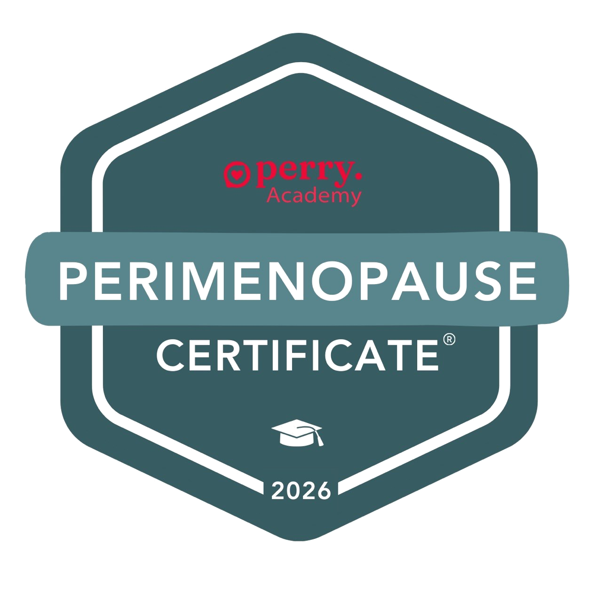

Вам за 35 — і з вами щось відбувається
Сон, настрій, цикл, сили змінюються. Це може бути перименопауза — а може бути щось інше. Давайте розберемося.
Почати безкоштовний розбір
З чим сюди приходять
Зміни приходять поступово і здаються не пов’язаними між собою. Часто чуєш «це вік» або «аналізи в нормі». Знайоме?
Сон
Прокидаєтеся о 4 ранку й не можете заснути. Зранку розбита, навіть якщо спала досить.
Припливи
Раптовий жар, нічна пітливість, доводиться відкривати вікно взимку.
Голова
Забуваєте слово посеред фрази, важче зосередитися. Це лякає більше за все інше.
Настрій
Тривога без причини, дратівливість, сльози на рекламі.
Цикл
Коротший або довший, рясніший, пропуски — передбачуваність зникла.
Тіло
Вага йде на живіт, суглоби скуті зранку, сил менше, ніж раніше.
Що ви отримаєте за 4 хвилини
- На що це схоже — чесно, без діагнозу і без «це просто вік».
- Що фахівець зазвичай хоче виключити: щитоподібну залозу, запаси заліза, апное сну — залежно від ваших відповідей.
- Два прості кроки, з яких можна почати вже цього тижня.
- Три питання, які варто поставити лікарю, — вашими словами.
- Розбір одразу на сторінці, його можна завантажити. Пошту не питаємо.
Нічні пробудження у 45–49 — стрес, гормональний перехід чи і те, і інше
На що це схоже
Пробудження під ранок разом зі змінами циклу часто трапляються в перименопаузі. Але сам по собі сон може страждати і з інших причин — тому варто розібратися.
Що фахівець зазвичай хоче виключити
Місячні стали рясніші — варто перевірити феритин (запаси заліза). Хропіння, яке помічають близькі, — привід обговорити апное сну.
Що запитати у фахівця
- Чи можуть мої пробудження бути пов’язані з апное, якщо близькі чують хропіння?
Зараз, а не потім
Перехід — це не тиждень і не місяць. Чим раніше зрозуміло, що відбувається, тим більше можна зробити.
жінок у перехідний період мають припливи або нічну пітливість.
у середньому тривають припливи — це не «перетерпіти кілька місяців».
вищий ризик апное сну після менопаузи — а в жінок його часто пропускають.
Спершу розбір, безкоштовно. Далі — лише якщо потрібно
Відповідаєте на 12 питань
Про цикл, сон, самопочуття, аналізи. Можна відповідати «не знаю».
Отримуєте розбір одразу
На сторінці, за хвилину. Його можна завантажити й показати лікарю.
Вирішуєте самі, що далі
Нічого не потрібно купувати. Якщо захочете — є застосунок, знайомство з нутриціологинею і клуб.
Поруч між візитами до лікаря
Застосунок VIA-L
Щоденний розбір вашого стану, зокрема з кільця чи годинника, і один фокус на тиждень. 3 дні безкоштовно.
Знайомство з Мариною
15 хвилин безкоштовно з нутриціологинею: обговорити розбір і з чого почати.
ЗаписатисяКлуб VIA-L у Telegram
Безкоштовно: розбори досліджень про перименопаузу й менопаузу, питання фахівцям.
Приєднатися
Марина Даценко, нутриціологиня VIA-L
Працюю з жінками в перименопаузі й менопаузі: харчування, сон, рух — на основі ваших даних і досліджень, а не загальних порад.

Сертифікована фахівчиня з перименопаузи — Perry Academy Perimenopause Certificate®- IMSЧленкиня International Menopause Society
- EMASЧленкиня European Menopause and Andropause Society
 Нутриціологиня — Міжнародний університет нутриціології та дієтології (IUND)
Нутриціологиня — Міжнародний університет нутриціології та дієтології (IUND)
Нутриціологиня — не лікарка: не ставить діагнозів і не призначає ліків. Розбір готує ШІ за правилами, складеними на базі досліджень.
Що ще може зупиняти
Це діагноз?
Ні. Розбір пояснює, на що схожа ваша картина, що зазвичай перевіряють і що запитати у фахівця. Діагноз ставить лікар.
Я не впевнена, що це перименопауза
Саме для цього розбір: він чесно скаже, якщо ваші відповіді більше схожі на іншу причину, і що варто виключити.
Потрібні аналізи?
Ні. Якщо щось здавали — відзначите, якщо ні — розбір підкаже, які аналізи зазвичай обговорюють з лікарем.
Куди йдуть мої відповіді?
Ми не питаємо ім’я, пошту чи телефон. Відповіді зберігаються анонімно — лише для статистики. Розбір пише ШІ за нашими правилами.
Скільки це коштує?
Розбір безкоштовний. Знайомство з Мариною — теж, 15 хвилин. Застосунок — 3 дні безкоштовно, далі за підпискою, якщо захочете.
Якщо я пройду й нічого не куплю?
Розбір залишиться у вас — його можна завантажити. Ніяких листів і дзвінків після цього не буде.
Почніть з того, що заважає вам сьогодні
12 питань, 4 хвилини — і ви знатимете, з чого почати.
Почати безкоштовний розбір